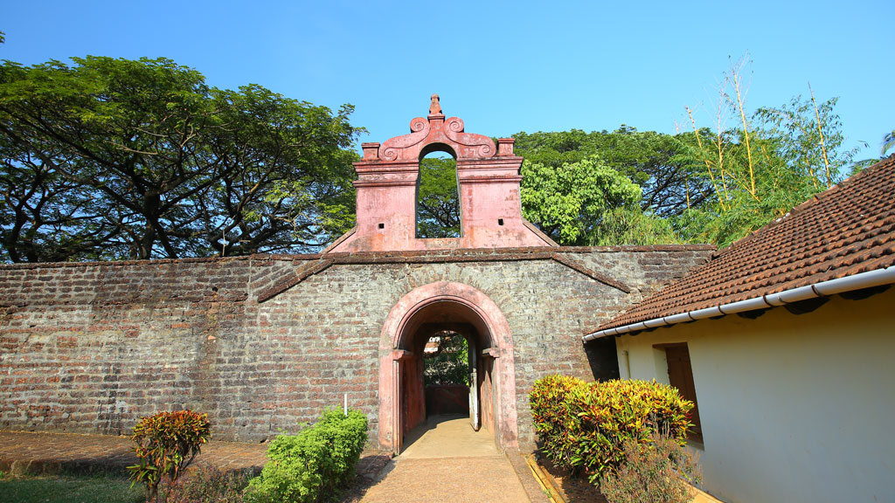

The impeccably unspoiled Payyabalam beach is adorned with sparkling pearls of golden sand and foamy white waves of the Arabian Sea. The highlight of Kannur and one of the many beautiful beaches of Kerala, the Payyabalam beach has an incredibly peaceful and inviting aura. Unwind after a long week by relaxing at this remarkable seashore and find yourself mesmerized by its elegant beauty and contagious calm.
Last updated 3 mins ago

Regarded as one of the finest snake sanctuaries of Asia, the Parassinikadavu Snake Park is the pride of the south. It is one of the most prominent reptile preservation centres in the country and is the only one in Kerala. The Parassinikadavu Snake Park is home to over 150 different species of reptiles like crocodiles, monitor lizards and snakes- both venomous and non-venomous.
Last updated 3 mins ago

The Arakkal Museum in Kannur city is one of the most significant and frequently visited attractions of the south that celebrates the memory and grandeur of Kerala's only Muslim royal family- the Arakkal Ali Rajas. Previously a majestic palace of the royal family and their actual place of residence, this museum is a true testimony to the impeccable Muslim architecture and design.
Last updated 3 mins ago